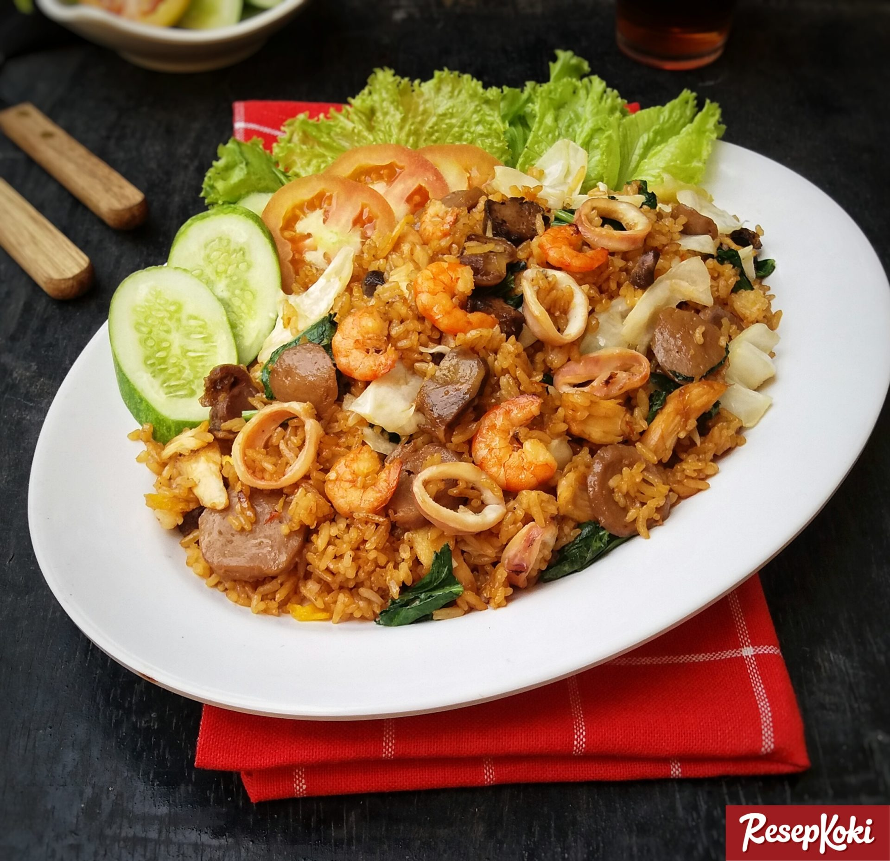

Crazy Fried Rice

Description
Fried rice is a dish of cooked rice that has been stir-fried in a wok or a frying pan and is usually mixed with other ingredients such as eggs, vegetables, seafood, or meat.
Ingredients
- White rice – 800 grams
- Chicken breast, boiled then shredded – 100 grams
- Shrimp – 50 grams
- Squid, sliced into rings – 50 grams
- Liver gizzards, sliced – 2 pairs
- Eggs – 2 pieces
- Meatballs, sliced – 5 pieces
- Caisim, coarsely sliced – 150 grams
- White cabbage, thinly sliced – 100 grams
- Spring onions, finely sliced – 1 stalk
- Salt – 1/2 tsp
- Chicken stock powder – 1/4 tsp
- Ground pepper – 1/2 tsp
- Soy sauce – 1 tsp
- Sweet soy sauce – 2 tbsp
- Oil for frying – 4 tsp
Ground spices:
- Shallots – 5 cloves
- Garlic – 3 cloves
- Red cayenne pepper – 5 pieces
How to make:
- Heat a little oil to make scrambled eggs, then set aside in a frying pan.
- Pour in a little oil and saute the ground spices until fragrant.
- Add fish sauce and all animal ingredients (shrimp, squid, gizzard liver, meatballs), stir-fry briefly and stir well.
- Add rice, stir all ingredients until evenly mixed.
- Add salt, chicken stock powder, ground pepper and sweet soy sauce. Stir until evenly mixed & fragrant.
- Finally add the vegetable ingredients (caisim, cabbage, spring onions), stir well until the vegetables wilt.
- Lift and serve.